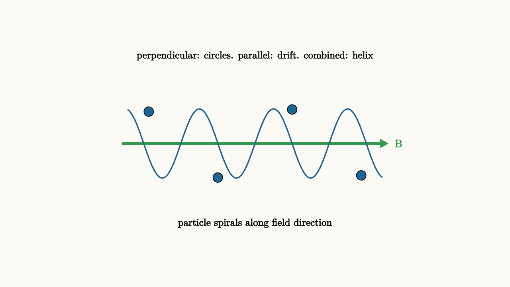

Magnetic Fields Guide Moving Charge
Here is one of the most puzzling facts in introductory physics: hold a charged particle perfectly still in a magnetic field, and nothing happens to it. No force. No deflection. The field seems invisible.
Now give that same charge a nudge - let it start moving - and suddenly it feels a force, at right angles to both its velocity and the field. The faster it moves, the larger the force. A particle moving parallel to the field still feels nothing. A particle moving perpendicular to the field feels the maximum push.
A force that only acts on moving objects. A force that always pushes sideways. A force that knows about the direction of motion. Magnetism, at least for individual charges, is fundamentally stranger than gravity or the electric force.
The Lorentz Force
The force on a moving charge in a magnetic field is:
The cross product is the key. It produces a vector perpendicular to both $\vec{v}$ and $\vec{B}$. Its magnitude is:
where $\theta$ is the angle between the velocity and the field. When $\theta = 90°$, you get maximum force. When $\theta = 0°$, the force is zero - a particle moving along the field lines feels nothing.
The direction comes from the right-hand rule: point your fingers in the direction of $\vec{v}$, curl them toward $\vec{B}$, and your thumb points in the direction of $\vec{v} \times \vec{B}$. For a positive charge, that's the force direction. For a negative charge, flip the direction.
source
background = [0.985, 0.98, 0.955, 1]
camera = Camera(4.8b)
"charge moving through field"
mesh field_label = center{[-1.8, -1.45, 0]} Text("B field into page", 0.68)
mesh B_dots = block {
. color{GRAY} Text("x", 0.62)
. center{[-1.5, 0.7, 0]} color{GRAY} Text("x", 0.62)
. center{[-1.5, -0.7, 0]} color{GRAY} Text("x", 0.62)
. center{[0, 0.7, 0]} color{GRAY} Text("x", 0.62)
. center{[0, -0.7, 0]} color{GRAY} Text("x", 0.62)
. center{[1.5, 0.7, 0]} color{GRAY} Text("x", 0.62)
. center{[1.5, -0.7, 0]} color{GRAY} Text("x", 0.62)
}
play Fade(0.5)
"add moving charge"
mesh charge = fill{alpha{0.22} BLUE} stroke{BLUE, 2} center{[-0.8, -0.2, 0]} Circle(0.16)
mesh velocity = color{ORANGE} Arrow(start: [-0.65, -0.2, 0], end: [0.75, -0.2, 0])
mesh v_label = center{[1.1, -0.2, 0]} color{ORANGE} Text("v", 0.75)
play Fade(0.6)
"force appears"
mesh force = color{GREEN} Arrow(start: [-0.8, -0.06, 0], end: [-0.8, 1.1, 0])
mesh f_label = center{[-0.8, 1.45, 0]} color{GREEN} Text("F = qv x B", 0.68)
play Fade(0.5)
"explain the perpendicularity"
mesh note = center{[1.2, -1.3, 0]} Text("force is perpendicular to velocity", 0.68)
play Fade(0.5)The force is always perpendicular to the velocity. This has an important consequence: the magnetic force does no work on a charge. Work equals force dotted with displacement, and since the force is perpendicular to the displacement at every instant, the dot product is zero. Magnetism can redirect a particle's motion but cannot speed it up or slow it down on its own.
Circular Motion: Nature's Cyclotron
When a charged particle enters a region of uniform magnetic field moving perpendicular to the field, something beautiful happens. The field deflects the particle sideways. But then the particle's direction has changed, so the field deflects it sideways again - in the new perpendicular direction. And again. And again.
The result is circular motion. The magnetic force acts as a centripetal force:
Solving for the radius of the circular orbit:
This formula is packed with physics. A heavier particle ($m$ large) curves less - harder to deflect. A faster particle ($v$ large) also curves less - it gets farther before the direction has changed much. A stronger field ($B$ large) bends the path more tightly. A larger charge ($|q|$ large) feels a bigger force and curves more.
source
param angle = 0.2
background = [0.985, 0.98, 0.955, 1]
camera = Camera(4.8b)
let CircularOrbit = |ang| block {
let cx = 1.15 * cos(ang)
let cy = 1.15 * sin(ang)
let vx = -0.65 * sin(ang)
let vy = 0.65 * cos(ang)
let fx = -0.55 * cos(ang)
let fy = -0.55 * sin(ang)
. stroke{LIGHT_GRAY, 1.5} center{[0, 0, 0]} Circle(1.15)
. fill{alpha{0.22} BLUE} stroke{BLUE, 2} center{[cx, cy, 0]} Circle(0.14)
. color{ORANGE} Arrow(start: [cx, cy, 0], end: [cx + vx, cy + vy, 0])
. color{GREEN} Arrow(start: [cx, cy, 0], end: [cx + fx, cy + fy, 0])
. center{[-1.55, -1.55, 0]} color{ORANGE} Text("v (velocity)", 0.62)
. center{[-1.55, -1.9, 0]} color{GREEN} Text("F (magnetic force)", 0.62)
}
"start the orbit"
mesh title = center{[0, 2.0, 0]} Text("magnetic force always points inward: circular orbit", 0.68)
mesh orbit = CircularOrbit(ang: $angle)
play Write(0.8)
"sweep around"
angle = 5.5
orbit = CircularOrbit(ang: $angle)
play Lerp(2.5)The orange arrow (velocity) is always tangent to the circle. The green arrow (force) always points toward the center - centripetal, inward, never doing work, always redirecting.
The Mass Spectrometer
The formula $r = mv/(|q|B)$ becomes a precision tool when you control $v$ and $B$ and measure $r$.
A mass spectrometer accelerates ions through a known voltage (giving them known kinetic energy, hence known speed), then lets them curve in a known magnetic field, and measures where they land. From the landing position, you read off the radius $r$. Knowing $q$, $v$, and $B$, you calculate $m$.
Different isotopes of the same element have the same charge but different masses. They curve to different radii and land at different positions. A mass spectrometer can resolve carbon-12 from carbon-13 from carbon-14, and measure the abundance of each.
This is how geologists date rock samples, how astronomers identify elements in stellar spectra, and how medical laboratories analyze samples. The entire technique rests on the radius formula for a charged particle in a magnetic field.
Currents Create Magnetic Fields
Individual moving charges create magnetic fields, and currents (charges in bulk motion) create them too. The magnetic field around a long, straight wire carrying current $I$ at distance $r$ is:
The constant $\mu_0 = 4\pi \times 10^{-7}$ T m/A is the permeability of free space. The field circles the wire - not radial, like an electric field from a point charge, but wrapped in loops around the current.
source
background = [0.985, 0.98, 0.955, 1]
camera = Camera(4.8b)
"introduce the wire"
mesh wire = stroke{DARK_GRAY, 8} Line(start: [0, -1.6, 0], end: [0, 1.6, 0])
mesh current_arrow = color{RED} Arrow(start: [0, -1.0, 0], end: [0, 1.0, 0])
mesh I_label = center{[0.35, 1.2, 0]} color{RED} Text("I", 0.75)
play Fade(0.7)
"field circles the wire"
mesh field_loop1 = stroke{ORANGE, 2} center{[0, 0, 0]} Circle(0.65)
mesh field_loop2 = stroke{ORANGE, 1.5} center{[0, 0, 0]} Circle(1.1)
mesh field_loop3 = stroke{ORANGE, 1} center{[0, 0, 0]} Circle(1.55)
mesh arrow1 = color{ORANGE} Arrow(start: [0.65, 0.05, 0], end: [0.55, 0.38, 0])
mesh arrow2 = color{ORANGE} Arrow(start: [1.1, 0.05, 0], end: [0.95, 0.55, 0])
mesh caption = center{[0, -1.85, 0]} Text("B field circles the wire, weaker farther out", 0.68)
play Fade(0.6)The direction of the circular field follows the right-hand rule: wrap your right hand around the wire with your thumb pointing in the direction of conventional current, and your fingers curl in the direction of the magnetic field.
This circular field pattern is fundamentally different from the radial pattern of an electric field around a charge. Electric field lines start on positive charges and end on negative charges. Magnetic field lines form closed loops with no beginning and no end. There are no magnetic monopoles - no isolated sources where magnetic field lines originate.
Why Parallel Wires Attract (or Repel)
Two parallel wires carrying current interact magnetically in a striking way. The current in wire 1 creates a magnetic field. Wire 2 sits in that field, carrying its own current. The moving charges in wire 2 experience a force due to wire 1's field.
Work out the directions with the right-hand rule: if both currents flow in the same direction, the force between the wires is attractive. If the currents flow in opposite directions, the force is repulsive.
source
background = [0.985, 0.98, 0.955, 1]
camera = Camera(4.8b)
"two parallel wires"
mesh wire1 = stroke{DARK_GRAY, 6} Line(start: [-1.1, -1.4, 0], end: [-1.1, 1.4, 0])
mesh wire2 = stroke{DARK_GRAY, 6} Line(start: [1.1, -1.4, 0], end: [1.1, 1.4, 0])
mesh I1 = color{RED} Arrow(start: [-1.1, -0.8, 0], end: [-1.1, 0.8, 0])
mesh I2 = color{RED} Arrow(start: [1.1, -0.8, 0], end: [1.1, 0.8, 0])
mesh l1 = center{[-1.1, 1.65, 0]} color{RED} Text("I", 0.72)
mesh l2 = center{[1.1, 1.65, 0]} color{RED} Text("I", 0.72)
play Fade(0.7)
"same direction: attract"
mesh B_field = stroke{ORANGE, 1.5} center{[-1.1, 0, 0]} Circle(0.7)
mesh force1 = color{GREEN} Arrow(start: [-1.1, 0, 0], end: [-0.45, 0, 0])
mesh force2 = color{GREEN} Arrow(start: [1.1, 0, 0], end: [0.45, 0, 0])
mesh attract_label = center{[0, -1.75, 0]} Text("parallel currents attract: forces point toward each other", 0.68)
play Fade(0.6)This attraction between parallel currents is the basis for the definition of the ampere. One ampere is defined as the current that, flowing in two infinite parallel wires 1 meter apart, produces an attractive force of $2 \times 10^{-7}$ N per meter of length.
The attraction also explains why current-carrying wires can press themselves together. In a lightning bolt, the enormous current flowing through an ionized channel of air is partly contained by the magnetic field it creates - called a pinch effect.
Charged Particles in Uniform Fields: Spirals
If a particle enters a magnetic field at an angle (not perfectly perpendicular to $\vec{B}$), things get more interesting. Decompose the velocity into a component perpendicular to $\vec{B}$ and a component parallel to $\vec{B}$.
The perpendicular component causes circular motion. The parallel component is unaffected by the magnetic force (since $\vec{v}_\parallel \times \vec{B}$ has $\vec{v}_\parallel$ parallel to $\vec{B}$, giving zero). The particle spirals: circular motion in the plane perpendicular to the field, steady drift along the field direction.
This spiral motion is what holds charged particles from the solar wind in Earth's Van Allen radiation belts. The particles bounce back and forth between Earth's magnetic poles, spiraling tighter and tighter as the field gets stronger near the poles, then bouncing back before they reach the dense atmosphere. When particles do penetrate to high altitudes near the poles, they collide with atmospheric gases and create the aurora borealis and aurora australis.

source
background = [0.985, 0.98, 0.955, 1]
camera = Camera(4.8b)
mesh spiral = block {
. color{GREEN} Arrow(start: [-2.5, 0, 0], end: [2.5, 0, 0])
. center{[2.7, 0, 0]} color{GREEN} Text("B", 0.72)
. stroke{BLUE, 2} ExplicitFunc(|x| 0.65 * sin(4.5 * x), [-2.4, 2.4, 160])
. fill{BLUE} center{[-2.0, 0.6, 0]} Circle(0.09)
. fill{BLUE} center{[-0.7, -0.64, 0]} Circle(0.09)
. fill{BLUE} center{[0.7, 0.64, 0]} Circle(0.09)
. fill{BLUE} center{[2.0, -0.6, 0]} Circle(0.09)
. center{[0, -1.5, 0]} Text("particle spirals along field direction", 0.68)
. center{[0, 1.65, 0]} Text("perpendicular: circles. parallel: drift. combined: helix", 0.68)
}
"helical motion"
play Fade(0.7)The Right-Hand Rule: A Navigation Tool
The right-hand rule for magnetic force appears so often that it becomes reflexive. A few standard configurations to practice:
A positive charge moving east through a field pointing north: use your right hand, fingers east, curl toward north, thumb points upward. Force is upward.
A negative charge moving east through the same northward field: same cross product, but multiply by $q < 0$, so force is downward.
Current flowing upward, and you're north of the wire: the field at your position is... wrap right hand around wire with thumb up, fingers at your position (north of wire) point westward. The field points west.
The right-hand rule is not magic - it's a compact encoding of the mathematics of cross products. But it gives you fast access to directions without writing out components each time.
The Bigger Picture
Magnetism looks like it should be completely separate from electricity. Different phenomena, different forces, different field geometry. But it's not, and this is one of the great unifications of 19th-century physics.
First hint: electric currents (moving charges) create magnetic fields. So electric phenomena produce magnetic effects.
Second hint: changing magnetic fields create electric fields. So magnetic phenomena produce electric effects.
Third hint (from special relativity, not covered here): a purely electric field in one reference frame appears as a combination of electric and magnetic fields in a moving frame. The electric and magnetic fields are actually two aspects of a single electromagnetic field, mixed differently depending on how you're moving.
That unification, when Maxwell completed it in the 1860s, also revealed that light is an electromagnetic wave. The magnetic force on a moving charge is the tip of a very large iceberg.
The Lesson
The magnetic force $\vec{F} = q\vec{v} \times \vec{B}$ is perpendicular to both the velocity and the field. It deflects but cannot accelerate. It bends straight-line motion into circular (or helical) orbits. The radius of the orbit encodes momentum-per-charge, which is why magnetic fields are used to measure particle masses.
Currents create magnetic fields that form closed loops. There are no magnetic monopoles. Parallel currents attract; antiparallel currents repel.
And underneath all of this is a deeper unity: electricity and magnetism are not separate phenomena but two facets of the same underlying structure. The next few essays build toward Maxwell's equations, where that unity becomes fully visible.